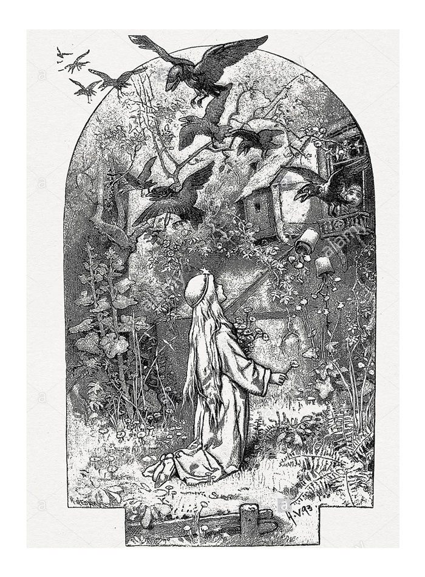

|
There were once on a time a king and a queen who lived happily together and had twelve children, but they were all boys. Then said the King to his wife, "If the thirteenth child which thou art about to bring into the world, is a girl, the twelve boys shall die, in order that her possessions may be great, and that the kingdom may fall to her alone." He caused likewise twelve coffins to be made, which were already filled with shavings, and in each lay the little pillow for the dead, and he had them taken into a locked-up room, and then he gave the Queen the key of it, and bade her not to speak of this to any one. The mother, however, now sat and lamented all day long, until the youngest son, who was always with her, and whom she had named Benjamin, from the Bible, said to her, "Dear mother, why art thou so sad?" "Dearest child," she answered, "I may not tell thee." But he let her have no rest until she went and unlocked the room, and showed him the twelve coffins ready filled with shavings. Then she said, "my dearest Benjamin, thy father has had these coffins made for thee and for thy eleven brothers, for if I bring a little girl into the world, you are all to be killed and buried in them." And as she wept while she was saying this, the son comforted her and said, "Weep not, dear mother, we will save ourselves, and go hence." But she said, "Go forth into the forest with thy eleven brothers, and let one sit constantly on the highest tree which can be found, and keep watch, looking towards the tower here in the castle. If I give birth to a little son, I will put up a white flag, and then you may venture to come back, but if I bear a daughter, I will hoist a red flag, and then fly hence as quickly as you are able, and may the good God protect you. And every night I will rise up and pray for you---in winter that you may be able to warm yourself at a fire, and in summer that you may not faint away in the heat." After she had blessed her sons therefore, they went forth into the forest. They each kept watch in turn, and sat on the highest oak and looked towards the tower. When eleven days had passed and the turn came to Benjamin, he saw that a flag was being raised. It was, however, not the white, but the blood-red flag which announced that they were all to die. When the brothers heard that, they were very angry and said, "Are we all to suffer death for the sake of a girl? We swear that we will avenge ourselves!-- wheresoever we find a girl, her red blood shall flow." Thereupon they went deeper into the forest, and in the midst of it, where it was the darkest, they found a little bewitched hut, which was standing empty. Then said they, "Here we will dwell, and thou Benjamin, who art the youngest and weakest, thou shalt stay at home and keep house, we others will go out and get food." Then they went into the forest and shot hares, wild deer, birds and pigeons, and whatsoever there was to eat; this they took to Benjamin, who had to dress it for them in order that they might appease their hunger. They lived together ten years in the little hut, and the time did not appear long to them. The little daughter which their mother the Queen had given birth to, was now grown up; she was good of heart, and fair of face, and had a golden star on her forehead. Once, when it was the great washing, she saw twelve men's shirts among the things, and asked her mother, "To whom do these twelve shirts belong, for they are far too small for father?" Then the Queen answered with a heavy heart, "Dear child, these belong to thy twelve brothers." Said the maiden, "Where are my twelve brothers, I have never yet heard of them?" She replied, "God knows where they are, they are wandering about the world." Then she took the maiden and opened the chamber for her, and showed her the twelve coffins with the shavings, and pillows for the head. "These coffins," said she, "were destined for thy brothers, but they went away secretly before thou wert born," and she related to her how everything had happened; then said the maiden, "Dear mother, weep not, I will go and seek my brothers." So she took the twelve shirts and went forth, and straight into the great forest. She walked the whole day, and in the evening she came to the bewitched hut. Then she entered it and found a young boy, who asked, "From whence comest thou, and whither art thou bound?" and was astonished that she was so beautiful, and wore royal garments, and had a star on her forehead. And she answered, "I am a king's daughter, and am seeking my twelve brothers, and I will walk as far as the sky is blue until I find them." She likewise showed him the twelve shirts which belonged to them. Then Benjamin saw that she was his sister, and said, "I am Benjamin, thy youngest brother." And she began to weep for joy, and Benjamin wept also, and they kissed and embraced each other with the greatest love. But after this he said, "Dear sister, there is still one difficulty. We have agreed that every maiden whom we meet shall die, because we have been obliged to leave our kingdom on account of a girl." Then said she, "I will willingly die, if by so doing I can deliver my twelve brothers." "No," answered he, "thou shalt not die, seat thyself beneath this tub until our eleven brothers come, and then I will soon come to an agreement with them." She did so, and when it was night the others came from hunting, and their dinner was ready. And as they were sitting at table, and eating, they asked, "What news is there?" Said Benjamin, "Don't you know anything?" "No," they answered. He continued, "You have been in the forest and I have stayed at home, and yet I know more than you do." "Tell us then," they cried. He answered, "But promise me that the first maiden who meets us shall not be killed." "Yes," they all cried, "she shall have mercy, only do tell us." Then said he, "Our sister is here," and he lifted up the tub, and the King's daughter came forth in her royal garments with the golden star on her forehead, and she was beautiful, delicate and fair. Then they were all rejoiced, and fell on her neck, and kissed and loved her with all their hearts. Now she stayed at home with Benjamin and helped him with the work. The eleven went into the forest and caught game, and deer, and birds, and wood-pigeons that they might have food, and the little sister and Benjamin took care to make it ready for them. She sought for the wood for cooking and herbs for vegetables, and put the pans on the fire so that the dinner was always ready when the eleven came. She likewise kept order in the little house, and put beautifully white clean coverings on the little beds, and the brothers were always contented and lived in great harmony with her. Once on a time the two at home had prepared a beautiful entertainment, and when they were all together, they sat down and ate and drank and were full of gladness. There was, however, a little garden belonging to the bewitched house wherein stood twelve lily flowers, which are likewise called students. She wished to give her brothers pleasure, and plucked the twelve flowers, and thought she would present each brother with one while at dinner. But at the self-same moment that she plucked the flowers the twelve brothers were changed into twelve ravens, and flew away over the forest, and the house and garden vanished likewise. And now the poor maiden was alone in the wild forest, and when she looked around, an old woman was standing near her who said, "My child, what hast thou done? Why didst thou not leave the twelve white flowers growing? They were thy brothers, who are now for evermore changed into ravens." The maiden said, weeping, "Is there no way of delivering them?" "No," said the woman, "there is but one in the whole world, and that is so hard that thou wilt not deliver them by it, for thou must be dumb for seven years, and mayst not speak or laugh, and if thou speakest one single word, and only an hour of the seven years is wanting, all is in vain, and thy brothers will be killed by the one word." Then said the maiden in her heart, "I know with certainty that I shall set my brothers free," and went and sought a high tree and seated herself in it and span, and neither spoke nor laughed. Now it so happened that a king was hunting in the forest, who had a great greyhound which ran to the tree on which the maiden was sitting, and sprang about it, whining, and barking at her. Then the King came by and saw the beautiful King's daughter with the golden star on her brow, and was so charmed with her beauty that he called to ask her if she would be his wife. She made no answer, but nodded a little with her head. So he climbed up the tree himself, carried her down, placed her on his horse, and bore her home. Then the wedding was solemnized with great magnificence and rejoicing, but the bride neither spoke nor smiled. When they had lived happily together for a few years, the King's mother, who was a wicked woman, began to slander the young Queen, and said to the King, "This is a common beggar girl whom thou hast brought back with thee. Who knows what impious tricks she practises secretly! Even if she be dumb, and not able to speak, she still might laugh for once; but those who do not laugh have bad consciences." At first the King would not believe it, but the old woman urged this so long, and accused her of so many evil things, that at last the King let himself be persuaded and sentenced her to death. And now a great fire was lighted in the courtyard in which she was to be burnt, and the King stood above at the window and looked on with tearful eyes, because he still loved her so much. And when she was bound fast to the stake, and the fire was licking at her clothes with its red tongue, the last instant of the seven years expired. Then a whirring sound was heard in the air, and twelve ravens came flying towards the place, and sank downwards, and when they touched the earth they were her twelve brothers, whom she had delivered. They tore the fire asunder, extinguished the flames, set their dear sister free, and kissed and embraced her. And now as she dared to open her mouth and speak, she told the King why she had been dumb, and had never laughed. The King rejoiced when he heard that she was innocent, and they all lived in great unity until their death. The wicked step-mother was taken before the judge, and put into a barrel filled with boiling oil and venomous snakes, and died an evil death. |
TL;DR:http://one-elevenbooks.com/the-twelve-brothers/ Once upon a time there was a king and a queen who had twelve sons. The queen was pregnant, again. For some reason the king decided that if the baby were a girl, that the twelve brothers would die so the princess could have lots of clothes and be the ruler of the country. He even had twelve coffins made, complete with shavings and coffin pillows. The queen was distressed. Her youngest son wanted to know what was wrong. For a while she wouldn’t tell him anything, but finally she showed him the coffins and told him the whole story. She then asked him to take his eleven brothers and go into the forest. The queen said she would hang a white flag upon the castle if the baby was a boy and if it were a girl she would hang a red flag on the castle. If the red flag appeared the brothers would have to stay away forever. The boys went into the woods where they found a bewitched cottage. They climbed a tree each day to look at the castle to search for flags. The day finally came and the flag was red. The boys swore that any maiden they came across would die and her red blood would be spilt upon the ground because a girl would have caused their deaths. For ten years they lived in the forest. After those ten years the girl was grown somewhat and was helping her mother do some laundry one day. She found twelve shirts, which were too small for her father and asked her mother about them. Her mother told her that she had twelve brothers. The girl took the shirts and went out into the forest in search of her brothers. She found the bewitched cottage and there she also found the youngest brother, named Benjamin(sound familiar?). Benjamin promised that he would not kill her and that he would work something out with the rest of the brothers. He hid her under a tub and when the other brothers came home he asked them not to kill the first maiden they saw. They agreed. Benjamin told them their sister was there. They were all quite happy to see her. She stayed in the cottage and helped them cook and clean. One day she picked some lilies from the garden, of which there were twelve, and her brothers were turned into ravens. An old woman appeared asking why she picked the lilies. The girl said she wanted to have a present for her brothers and wanted to know if there were any way to change them back. The old woman said the only way to change them back is if she were to remain completely silent for seven years. The girl agreed. One day a king was riding in the forest. He came upon the girl and asked her to marry him. She couldn’t speak, but nodded her head, “Yes,” or, “No,” the king probably didn’t care. The story does say that she consented though. They were married some time and people started complaining about the new queen, specifically one of the king’s other family members. They said that maybe she was faking her muteness. The king sentenced her to death at the stake. They lit the whole thing on fire and the very hour of seven years passed. Twelve ravens swooped down and turned back into the twelve brothers, who then put out the fire. The queen was saved and the king was very happy to have her back.  |